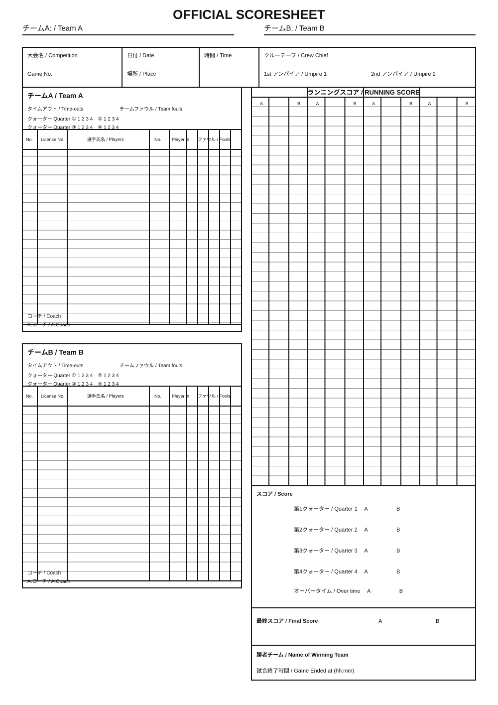

試合前入力・大会情報・選手登録
試合情報
TEAM A
TEAM A
TEAM B
TEAM B
GAME CENTER
公式スコアシート確認
提供されたスコアシートと同じ項目構成のブラウザ用テンプレートへリアルタイム反映

LIVE STATS
スタッツ
得点・シュート・リバウンド・アシスト・ターンオーバー等を自動集計
EVENT LOG
プレイ・バイ・プレイ
全入力を時系列で保存。UNDO / REDOに対応。
提供されたスコアシートと同じ項目構成のブラウザ用テンプレートへリアルタイム反映

得点・シュート・リバウンド・アシスト・ターンオーバー等を自動集計
全入力を時系列で保存。UNDO / REDOに対応。